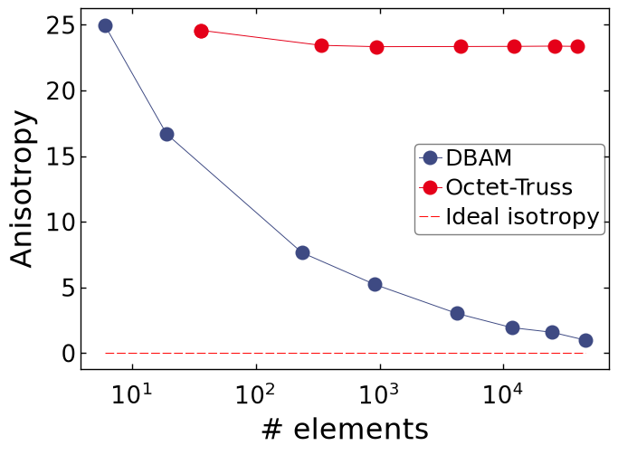
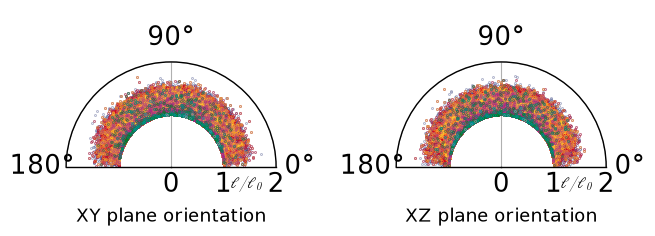
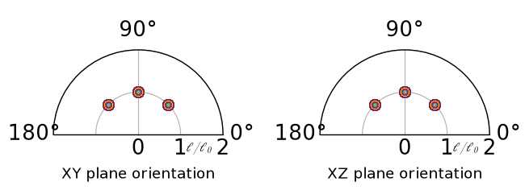

Note
Go to the end to download the full example code.
Evolution of lattice isotropy with size#
In this script, we see how to generate a lattice, extract some information on its structure, and find the limit of size below which a lattice’s structure cannot be considered isotropic anymore.
import numpy as np
import matplotlib.pyplot as plt
import treillis
plt.style.use(treillis.style)
C:\Users\EG283299\Documents\new_pylat\treillis_cea\examples\complex\plot_isotropy.py:13: MatplotlibDeprecationWarning: The text.hinting_factor rcParam was deprecated in Matplotlib 3.11 and will be removed in 3.13.
plt.style.use(treillis.style)
C:\Users\EG283299\Documents\new_pylat\treillis_cea\examples\complex\plot_isotropy.py:13: MatplotlibDeprecationWarning: The text.kerning_factor rcParam was deprecated in Matplotlib 3.11 and will be removed in 3.13.
plt.style.use(treillis.style)
Lattice creation#
To compare the isotropy evolution, let’s create a Delaunay-based lattice and a octet-truss lattice of the same size
N = 90
iso = treillis.Lattice.initialize(N, 8., 'TriDT3D')
aniso = treillis.Lattice.initialize(N, 8, 'Octet')
Vi = iso.nodes[iso.elems[:,1].astype(int)] - iso.nodes[iso.elems[:,0].astype(int)]
Vi /= iso.L
Va = aniso.nodes[aniso.elems[:,1].astype(int)] - aniso.nodes[aniso.elems[:,0].astype(int)]
Va /= aniso.L
Using prepacking
Packing generated
Creating lattice
get_e: 0%| | 0/45772 [00:00<?, ?tasks/s]
get_e: 0%| | 0/45772 [00:00<?, ?tasks/s]
get_e: 0%| | 0/45772 [00:00<?, ?tasks/s]
get_e: 0%| | 0/45772 [00:00<?, ?tasks/s]
get_e: 0%| | 0/45772 [00:00<?, ?tasks/s]
get_e: 0%| | 0/45772 [00:00<?, ?tasks/s]
get_e: 0%| | 0/45772 [00:00<?, ?tasks/s]
get_e: 0%| | 0/45772 [00:00<?, ?tasks/s]
get_e: 0%| | 0/45772 [00:00<?, ?tasks/s]
get_e: 0%| | 0/45772 [00:00<?, ?tasks/s]
get_e: 0%| | 0/45772 [00:01<?, ?tasks/s]
get_e: 0%| | 0/45772 [00:01<?, ?tasks/s]
get_e: 0%| | 0/45772 [00:01<?, ?tasks/s]
get_e: 0%| | 0/45772 [00:01<?, ?tasks/s]
get_e: 0%| | 0/45772 [00:01<?, ?tasks/s]
get_e: 0%| | 0/45772 [00:01<?, ?tasks/s]
get_e: 0%| | 0/45772 [00:01<?, ?tasks/s]
get_e: 0%| | 0/45772 [00:01<?, ?tasks/s]
get_e: 0%| | 0/45772 [00:01<?, ?tasks/s]
get_e: 0%| | 0/45772 [00:02<?, ?tasks/s]
get_e: 0%| | 0/45772 [00:02<?, ?tasks/s]
get_e: 0%| | 0/45772 [00:02<?, ?tasks/s]
get_e: 0%| | 0/45772 [00:02<?, ?tasks/s]
get_e: 0%| | 0/45772 [00:02<?, ?tasks/s]
get_e: 0%| | 0/45772 [00:02<?, ?tasks/s]
get_e: 0%| | 0/45772 [00:02<?, ?tasks/s]
get_e: 0%| | 0/45772 [00:02<?, ?tasks/s]
get_e: 0%| | 0/45772 [00:02<?, ?tasks/s]
get_e: 0%| | 0/45772 [00:03<?, ?tasks/s]
get_e: 0%| | 0/45772 [00:03<?, ?tasks/s]
get_e: 0%| | 0/45772 [00:03<?, ?tasks/s]
get_e: 0%| | 0/45772 [00:03<?, ?tasks/s]
get_e: 0%| | 0/45772 [00:03<?, ?tasks/s]
get_e: 0%| | 0/45772 [00:03<?, ?tasks/s]
get_e: 0%| | 0/45772 [00:03<?, ?tasks/s]
get_e: 0%| | 0/45772 [00:03<?, ?tasks/s]
get_e: 0%| | 0/45772 [00:03<?, ?tasks/s]
get_e: 0%| | 0/45772 [00:03<?, ?tasks/s]
get_e: 0%| | 0/45772 [00:04<?, ?tasks/s]
get_e: 0%| | 0/45772 [00:04<?, ?tasks/s]
get_e: 0%| | 0/45772 [00:04<?, ?tasks/s]
get_e: 0%| | 0/45772 [00:04<?, ?tasks/s]
get_e: 0%| | 0/45772 [00:04<?, ?tasks/s]
get_e: 0%| | 0/45772 [00:04<?, ?tasks/s]
get_e: 0%| | 0/45772 [00:04<?, ?tasks/s]
get_e: 0%| | 0/45772 [00:04<?, ?tasks/s]
get_e: 0%| | 0/45772 [00:04<?, ?tasks/s]
get_e: 0%| | 0/45772 [00:05<?, ?tasks/s]
get_e: 0%| | 0/45772 [00:05<?, ?tasks/s]
get_e: 0%| | 0/45772 [00:05<?, ?tasks/s]
get_e: 0%| | 0/45772 [00:05<?, ?tasks/s]
get_e: 0%| | 0/45772 [00:05<?, ?tasks/s]
get_e: 0%| | 0/45772 [00:05<?, ?tasks/s]
get_e: 0%| | 0/45772 [00:05<?, ?tasks/s]
get_e: 0%| | 0/45772 [00:05<?, ?tasks/s]
get_e: 0%| | 0/45772 [00:05<?, ?tasks/s]
get_e: 0%| | 0/45772 [00:06<?, ?tasks/s]
get_e: 0%| | 0/45772 [00:06<?, ?tasks/s]
get_e: 29%|██▊ | 13080/45772 [00:06<00:00, 119778.65tasks/s]
get_e: 43%|████▎ | 19618/45772 [00:06<00:00, 84960.81tasks/s]
get_e: 86%|████████▌ | 39234/45772 [00:06<00:00, 128925.73tasks/s]
get_e: 100%|██████████| 45772/45772 [00:06<00:00, 6921.33tasks/s]
Defining sub-lattices#
We define size ranges which would be sub-lattices, the radius over which elements will be ignored to recover the angles and thus the isotropy.
We can now cut the angle table according to the radius ranges.
d_DBAM = np.sqrt(np.sum(iso.nodes**2, axis=1))
d_OT = np.sqrt(np.sum(aniso.nodes**2, axis=1))
keep_DBAM = [np.flatnonzero(np.prod(d_DBAM[iso.elems[:,:2].astype(int)] < r,
axis=1)) for r in Si]
keep_OT = [np.flatnonzero(np.prod(d_OT[aniso.elems[:,:2].astype(int)] < r,
axis=1)) for r in Sa]
Ai = [iso.angle[I] for I in keep_DBAM]
Aa = [aniso.angle[I] for I in keep_OT]
Li = [iso.length[I] for I in keep_DBAM]
La = [aniso.length[I] for I in keep_OT]
Oi = [Vi[I] for I in keep_DBAM]
Oa = [Va[I] for I in keep_OT]
Calculating distance to perfect isotropy#
To get the distance to the perfect isotropy, the angle distributions are calculated.
pbins = np.arange(-180,180)*np.pi/180
tbins = np.arange(180)*np.pi/180
iPhi = []
iTheta = []
aPhi = []
aTheta = []
# get the angle distributions
for Rho in Ai:
Rho=np.array(Rho)
theta = Rho[:,0]
thist = np.histogram(theta, bins=tbins, density=True);
iTheta.append(thist[0]/thist[0].max())
phi = Rho[:,1]
phist = np.histogram(phi, bins=pbins, density=True);
iPhi.append(phist[0])
for Rho in Aa:
Rho=np.array(Rho)
theta = Rho[:,0]
thist = np.histogram(theta, bins=tbins, density=True);
aTheta.append(thist[0]/thist[0].max())
phi = Rho[:,1]
phist = np.histogram(phi, bins=pbins, density=True);
aPhi.append(phist[0])
def dist_iso(phi, theta):
x = (tbins[1:]+tbins[:-1])/2
return np.sqrt(
sum((phi-phi.mean())**2) + sum((theta-np.sin(x))**2))
Di = [dist_iso(p, t) for (p, t) in zip(iPhi, iTheta)]
Da = [dist_iso(p, t) for (p, t) in zip(aPhi, aTheta)]
ideal = dist_iso(np.ones(len(tbins)-1), np.sin((tbins[1:]+tbins[:-1])/2))
Visualization of the results#
Distance to perfect isotropy#
plt.figure()
plt.semilogx([len(I) for I in keep_DBAM], Di, 'o-', label='DBAM')
plt.semilogx([len(I) for I in keep_OT], Da, 'o-', label='Octet-Truss')
plt.plot([len(keep_DBAM[-1]),len(iso.elems)], [ideal]*2, 'r--',
label='Ideal isotropy')
plt.legend()
plt.xlabel('# elements')
plt.ylabel('Anisotropy')
plt.show()

Angular distribution#
Delaunay-based lattice#
fig, ax = plt.subplots(ncols=2, subplot_kw=dict(polar=True),
gridspec_kw={'wspace': .3}, figsize=(8,3))
for (theta, l) in zip(Oi, Li):
theta = np.array(theta)
ax[0].plot(np.arccos(np.dot(theta, np.array([0,1,0]))),l/iso.L,'.',
markersize=.5)
ax[1].plot(np.arccos(np.dot(theta, np.array([0,0,1]))),l/iso.L,'.',
markersize=.5)
ax[0].set_title('XY plane orientation',y=-.05)
ax[1].set_title('XZ plane orientation',y=-.05)
for axe in ax:
axe.set_rlim([0,2])
axe.set_rticks([0,1,2])
axe.set_thetamin(0)
axe.set_thetamax(180)
axe.text(-.35,1.2,r'$\ell/\ell_0$')
plt.show()

C:\Users\EG283299\Documents\new_pylat\treillis_cea\examples\complex\plot_isotropy.py:140: RuntimeWarning: invalid value encountered in arccos
ax[0].plot(np.arccos(np.dot(theta, np.array([0,1,0]))),l/iso.L,'.',
C:\Users\EG283299\Documents\new_pylat\treillis_cea\examples\complex\plot_isotropy.py:142: RuntimeWarning: invalid value encountered in arccos
ax[1].plot(np.arccos(np.dot(theta, np.array([0,0,1]))),l/iso.L,'.',
Octet-truss lattice#
fig, ax = plt.subplots(ncols=2, subplot_kw=dict(polar=True),
gridspec_kw={'wspace': .3}, figsize=(8,3))
for (theta, l, s) in zip(Oa, La, Sa):
theta = np.array(theta)
ax[0].plot(np.arccos(np.dot(theta, np.array([0,1,0]))),l/iso.L,'.',
markersize=s/5)
ax[1].plot(np.arccos(np.dot(theta, np.array([0,0,1]))),l/iso.L,'.',
markersize=s/5)
ax[0].set_title('XY plane orientation',y=-.05)
ax[1].set_title('XZ plane orientation',y=-.05)
for axe in ax:
axe.set_rlim([0,2])
axe.set_rticks([0,1,2])
axe.set_thetamin(0)
axe.set_thetamax(180)
axe.text(-.35,1.2,r'$\ell/\ell_0$')
plt.show()

Total running time of the script: (1 minutes 9.320 seconds)